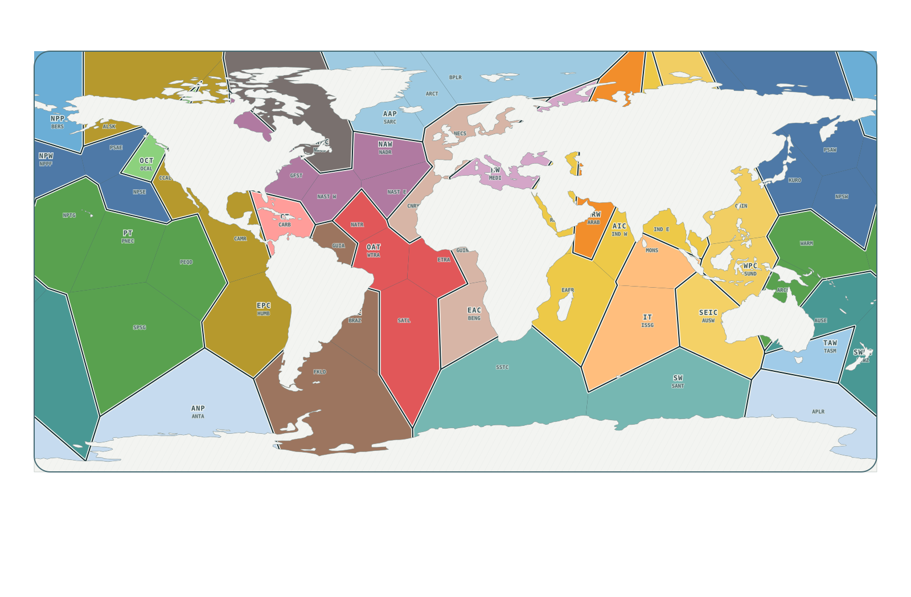

Ocean States of the World · A fluid atlas
Discover the world
within the ocean.
Explore its places, follow its currents, and see how it changes.
Explore the ocean
Maps, regions, and depths.
Follow the currents
Currents, eddies, and connections.
See what's changing
Temperature, heat, and events.

One connected ocean.
Regions give us places to look. Currents and eddies show movement. Temperature and heat reveal change. Explanations alongside the maps help you understand what you see.
Learn more about the ocean · About Ocean States of the World
Working atlas preview. These pages bring together existing maps, dated datasets, and research examples. They are not a live feed or a new scientific release. Each view identifies its source, period, and limits. About this build